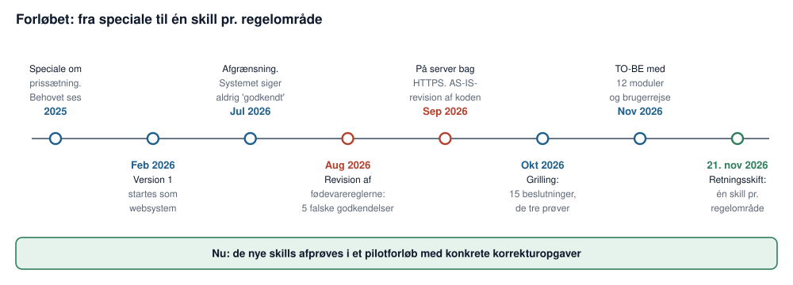
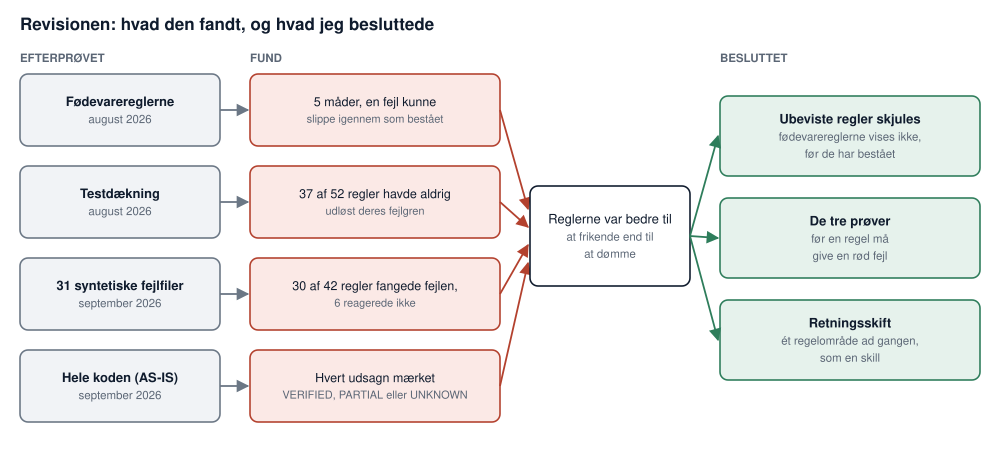
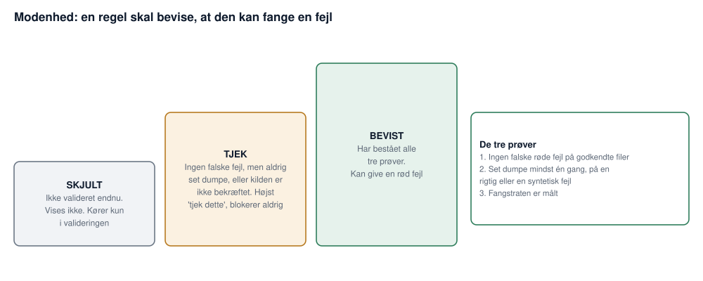
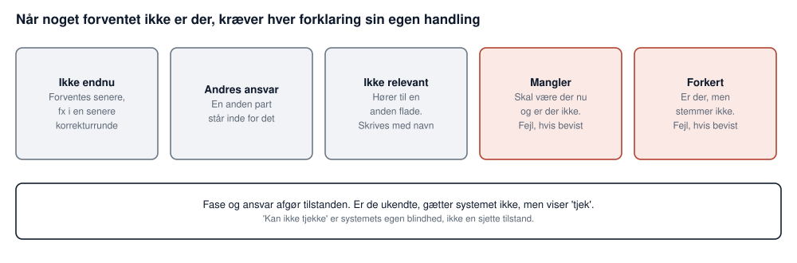
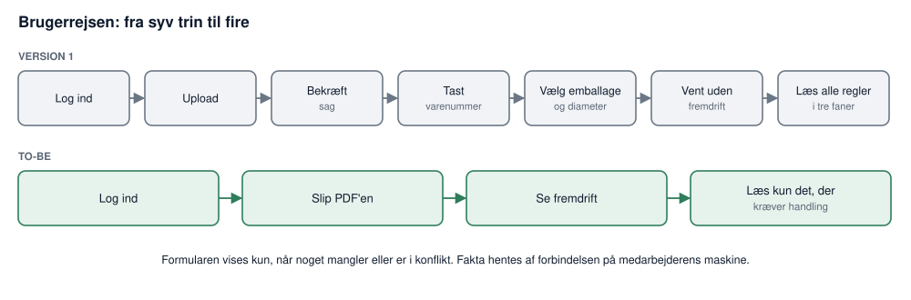
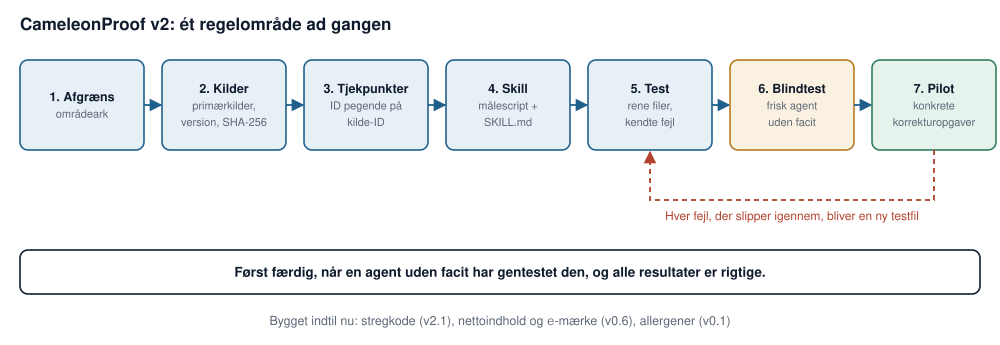
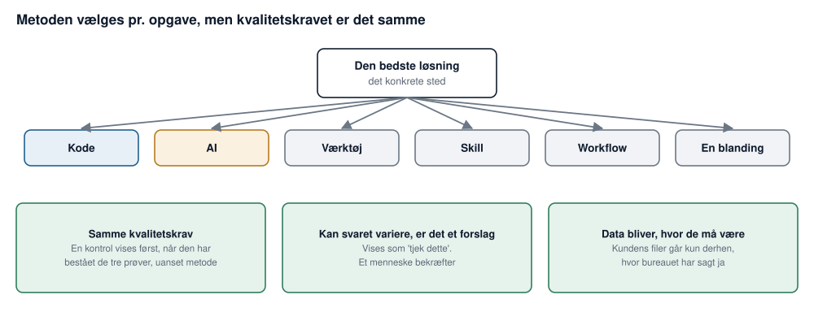

Oliver Bruhn Lyngaa Wegeberg · Cand.merc. og AI-first udvikler · LinkedIn
CameleonProof: korrektur af emballagedesign med AI-agenter og almindelig kode
Under mit speciale så jeg, at korrektur af emballage binder meget specialisttid hos et designbureau, og jeg foreslog selv at bygge et system til opgaven. Jeg har stået for problemet, kravene, beslutningerne og kontrollen. AI-kodeagenter har skrevet koden. Denne side viser hele forløbet, også det, der ikke gik som planlagt.
automatiske testcases i version 1. Tests styrer, hvad der kommer på serveren
fødevareregler havde aldrig udløst deres fejlgren. Det fandt min egen revision
stregkoderegler fangede en indsat fejl i en test med syntetiske fejlfiler
regelområder bygget som skills i version 2, hvert med primærkilder og blindtest
Tallene handler om mit eget system. Bureauets interne tal og kundedata vises ikke.
1 · Problemet
Korrektur er specialistarbejde under tidspres
Før et emballagedesign går i trykken, bliver det læst korrektur. Er stregkoden stor nok og langt nok fra skærelinjen? Står mængden med store nok tal, og står ℮-mærket rigtigt? Er allergenerne fremhævet? Reglerne står i EU-forordninger, danske bekendtgørelser, GS1-standarden og kundernes egne manualer.
En fejl, der slipper igennem, bliver først opdaget efter trykning. En fejl, der bliver fanget sent, giver en ekstra korrekturrunde, hvor både designer og korrekturlæser bliver trukket ud af andet arbejde. Ledelsen anslår, at bureauet laver flere hundrede korrekturer af emballage om året á cirka en time. Det er et skøn, ikke en målt besparelse.
Jeg skrev kandidatspeciale hos bureauet om prissætning i kreative virksomheder og koblede flere års projekt-, tids- og regnskabsdata i Python. Specialet endte i en prisramme, som ledelsen bruger i dag. Undervejs i data så jeg et andet mønster: korrektur var en tilbagevendende opgave, og en stor del af den bestod i at kontrollere ting, der står i regler. Det lå uden for specialet, så jeg foreslog selv et nyt projekt.

2 · Analysen
Først data, så krav
Før og under byggeriet brugte jeg bureauets egne data til at forstå opgaven:
- Tidsregistreringer på korrekturopgaver, koblet til projekter, for at efterprøve ledelsens skøn. Analysen pegede på samme størrelsesorden.
- Korrekturrunderne på filserveren, for at se hvad der faktisk bliver rettet. Kommentarerne blev klassificeret med AI og ikke efterprøvet af et menneske, så resultatet bruges som et skøn.
- Primærkilder: EU-forordning 1169/2011 om fødevareinformation, danske bekendtgørelser og vejledninger og GS1 General Specifications.
Data og fund fra kunderne vises ikke her. Analysen gav to indsigter, der ændrede retningen:
Reglerne er kun en del af korrekturen
Regelbaserede krav ser ud til at være en mindre del af det, der rettes i praksis. Resten er kundekrav og layout. Derfor lover systemet ikke at erstatte korrekturen, og regler, kundekrav og bureauets standarder holdes i hver sit lag.
Designere arbejder på grænsen
Skriften til mængdeangivelser sættes tit præcis til minimum, så rene filer måler lige omkring kravet. En skarp grænse ville give falske alarmer på korrekte filer. Det førte til en målt fejlmargin og en status for "tæt på grænsen".
Ikke alt, en korrekturlæser retter, er en fejl efter en regel. Meget er smag og ønsker. Systemet skal kunne skelne, og det må aldrig selv give bureauets godkendelse til tryk. Den er bureauets ansvar.
3 · Version 1 · februar til september 2026
Et websystem på server bag HTTPS
Den første version var et websystem. Designeren uploader en PDF og får tre ting tilbage: hvad der skal rettes, hvad et menneske skal vurdere, og hvad systemet ikke kunne tjekke. Hvert fund peger på den regel og den kilde, det bygger på.

- Regler er data, ikke kode. 110 regelkort i YAML med tærskler, betingelser og kilde-ID'er. 42 stregkoderegler er slået til i brugerfladen. For 40 af dem slår en test kildehenvisningen op i selve kildedokumentet.
- Python og FastAPI med login og adgang pr. sag. PyMuPDF læser PDF'en, zxing-cpp afkoder stregkoden, og Tesseract er fallback, når teksten er kurver. Resultater gemmes i SQLite.
- 2.179 automatiske testcases og en regressionsbaseline med 1.110 låste resultater på 10 rigtige designs. GitHub Actions deployer kun, når alt er grønt.
- AI kun ét sted. Claude vision foreslår stregkodens placering, når layoutanalysen giver "kan ikke tjekke". Svaret kan højst blive rådgivende.
Serveren må aldrig kunne nå bureauets filserver. Produktdata som varenummeret hentes i stedet af et lille program på medarbejderens egen maskine, som kun kan læse og kun svarer lokalt.
Systemet siger aldrig "godkendt". Er alle automatiske tjek uden fund, bliver dommen "afventer manuel bekræftelse, ikke klar til produktion". Et menneske kan afgøre punkter, der kræver vurdering, men ikke omstøde en dom, systemet har målt.
Version 1 kom på server i september 2026, men blev ikke taget i brug af bureauet.
4 · Revisionen · august til oktober 2026
Mange grønne tests betød ikke, at systemet fangede fejl
Da systemet voksede, satte jeg agenter til at revidere det: Hvor kan systemet sige "bestået" uden grund? Kan en regel overhovedet dømme? Hvad gør koden egentlig? Revisionerne fandt det, testtallet ikke kunne vise.

Revisionen af fødevarereglerne fandt fem måder, en fejl kunne slippe igennem som bestået. Et eksempel: nettomængden blev "fundet" i næringsdeklarationens "pr. 100 g". Et andet: allergenfremhævning blev godkendt, bare fordi der fandtes en ingrediensliste. Alle fem blev afvæbnet.
- Kendte falske "bestået" på stregkoder gik fra 5 til 0.
- Stregkodekort uden efterprøvet kilde gik fra 33 af 41 til 3 af 42.
- De 10 rigtige designs er gået til tryk, men ingen har efterprøvet dem uafhængigt. De er en baseline, der fanger utilsigtede ændringer, ikke en facitliste.
- AS-IS-revisionen i september gennemgik hele koden og mærkede hvert udsagn VERIFIED, PARTIAL eller UNKNOWN. Analysen af, hvad et fuldt system skal kunne, blev bagefter efterprøvet i en uafhængig gennemgang.
En regel må først give en rød fejl, når den har bestået tre prøver: ingen falske fejl på godkendte filer, set dumpe mindst én gang, og fangstraten er målt. Fødevarereglerne skjules som ubeviste, indtil de består.
5 · Nyt design og retningsskift · oktober til november 2026
Et TO-BE, der aldrig blev bygget, og hvorfor det var rigtigt
Efter revisionen afklarede jeg 15 beslutninger i en struktureret runde spørgsmål og svar og skrev et TO-BE med 12 moduler. Det beskrev version 2 som en videreudvikling af websystemet. Tre af de bærende idéer:



Retningsskift. Jeg venter ikke på et interview eller en gennemgang hos bureauet, før jeg bygger. I stedet bygges ét regelområde ad gangen som en Claude-skill, og vi lærer af hvert område. Principperne fra TO-BE følger med: de tre prøver, statusserne, at intet kaldes "godkendt", og at kundepraksis holdes adskilt fra standarden.
Først kun regelbaserede krav: lov, standarder og mærkningsordninger. Layout og kunderegler kommer senere. Et område vælges ikke kun efter, hvor tit det nævnes i korrekturer, men også hvis det i dag tjekkes manuelt uden at blive nævnt.
6 · Version 2 i dag
Én skill pr. regelområde, med målinger i kode og forklaringer fra AI
Hvert område er en Claude-skill: en vejledning til modellen, et målescript i Python og en kildeliste med afsnit og sidetal. Scriptet måler og giver status. Modellen ser på billederne, spørger om det, der mangler, og forklarer resultatet til grafikeren.

En rettelse er først færdig, når en frisk agent, der ikke har set facit, har gentestet den. Den, der byggede et område, laver ikke selv kildekontrollen.
Demo: stregkode-skillen på en opdigtet etiket
Etiketten er lavet til demoen med to fejl, som skillen ikke kender på forhånd: koden er for lav, og den sidder for tæt på kanten. Billederne og notatet er fra en rigtig kørsel af den offentlige udgave.


Skal rettes
RETStregkodens højde (SK-02). Målt 17,40 mm. GS1 kræver mindst 22,85 mm ved denne størrelse, efter tabel 5-44. Målingen kan være ca. 0,05 mm forkert, så selv med den usikkerhed er koden for lav.
Tag stilling til
VURDERAfstand til kanten (SK-11). 5,0 mm fra etikettens kant. GS1 siger "når muligt" mindst 8 mm, så det er ikke et ubetinget krav.
VURDERVarenummer (VD-01). Gyldigt kontrolciffer, men om det er produktets rigtige nummer, kan kun varedata sige.
Ingen fund på de tjekkede punkter
INGEN_FUNDStørrelse, guard bars, lyszoner, luft til cifrene, cifrenes størrelse og indhold, kontrast. Det er ikke en godkendelse.
Hele notatet, målingerne og billederne ligger i stregkodekorrektur/eksempel.
Tre steder i koden
Hvert tjek peger på en kilde. Et tjek i scriptet har et tjekpunkt-ID, et kilde-ID og stedet i GS1-standarden. Derfor kan hvert fund i rapporten slås op.
TJEKPUNKT = {
"stoerrelse": ("SK-01", "K-01", "GS1 v26 tabel 5-44 (5.12.3.1)", "GS1"),
"hoejde": ("SK-02", "K-02, K-03", "GS1 v26 tabel 5-44 med fodnote (**), 6.3.3.4", "GS1"),
"kant": ("SK-11", "K-09, K-10", "GS1 v26 6.3.3.3 (når muligt), 6.2.3.3", "GS1"),
...
}Målingens usikkerhed afgør status. Er koden for lav, også når man trækker måleusikkerheden fra, er det RET. Er den lige under kravet, men inden for usikkerheden, er det VURDER. En grafiker skal ikke have en rød fejl på en fil, der måske er korrekt.
if h + TOL_MM < krav_h * 0.998: # for lav, selv med usikkerheden
st = ret
elif h < krav_h * 0.998: # lige under, men inden for usikkerheden
st = VURDER
else:
st = INGEN_FUNDscripts/maal.py, linje 1046. Forkortet. TOL_MM er 0,05 mm, afprøvet på 14 vektor-PDF'er med kendt facit.
"Ingen fund" er ikke en godkendelse. Rapporten lister de punkter, der er tjekket uden fund, og ved siden af alt det, der ikke blev tjekket.
# INGEN_FUND er ikke en godkendelse.
resultat["ingen_fund_paa"] = sorted({f"{t['tjekpunkt']} {t['navn']}" for t in alle
if t["status"] == INGEN_FUND and t.get("tjekpunkt")})
resultat["ikke_tjekket"] = IKKE_TJEKKET + [...]Status for de tre områder
| Område | Version | Testet |
|---|---|---|
| Stregkode (GS1) | 2.1 | Regression på 45 filer. Måleusikkerheden afprøvet på 14 vektor-PDF'er. En gennemgang mod GS1 fandt ti forkerte henvisninger, som er rettet og kontrolleret af en uafhængig agent |
| Nettoindhold og ℮-mærke | 0.6 | Første blindtest fandt 12 af 14 fejlvarianter og gav ingen falsk RET på 6 fejlfri filer. Målingerne afveg højst 0,037 mm fra en uafhængig agents måling |
| Allergener | 0.1 | Første testrunde fandt 8 af 10 fejlfiler. Anden runde missede to nye varianter. De er rettet og gentestet af en ny agent |
Den offentlige udgave af stregkode-skillen har kun GS1-laget. Kundepraksis og bureauets skabeloner er taget ud. Den giver samme mål og statusser som den interne udgave på alle 20 testfiler, og dens 8 automatiske tests består.
7 · Sådan arbejder jeg
Agenterne skriver koden. Jeg står inde for, hvad systemet påstår
Jeg er cand.merc., ikke uddannet programmør. Koden og de fleste dokumenter i projektet er skrevet af AI-kodeagenter, især Claude Code. I version 1 er Claude medforfatter på 133 af 175 commits. Min del er problemet, kravene, beslutningerne og kontrollen.
| Hvad | Hvem | |
|---|---|---|
| Besluttet | Problem og afgrænsning, hvilke områder der bygges først, statusmodellen, sikkerhed og dataadgang, testmetode, fejlmargin, hvad AI må og ikke må | Mig |
| Bygget | Kode, tests, rapporter, opsætning af server og dokumentation | AI-kodeagenter ud fra mine skrevne direktiver |
| Kontrolleret | Resultater på kendte filer, revisioner, blindtest og kildekontrol | Mig, sammen med uafhængige agenter uden facit |


Beslutningslog
Mine egne beslutninger, som de står med dato i projektets filer. Beslutninger, der bygger på bureauets eller kundernes praksis, er udeladt.
| Dato | Beslutning | Hvorfor, og hvad der skete |
|---|---|---|
| 9. jul 2026 | Først kun bureauets egne filer | Det er dem, korrekturen faktisk kører på. Andre formater kører en mere forsigtig vej med ærlige "kan ikke tjekke" i stedet for gæt |
| 9. jul 2026 | Aldrig "godkendt" | Uden fund bliver dommen "afventer manuel bekræftelse". Et menneske kan bekræfte, men ikke omstøde en målt dom |
| 7. aug 2026 | Rigtige designs er en baseline, ikke en facitliste | De er gået til tryk, men ikke efterprøvet uafhængigt. Det førte til tests med syntetiske fejl, der viser, om en regel kan dømme |
| 17. sep 2026 | Systemet giver aldrig selv bureauets godkendelse til tryk | Godkendelsen er bureauets ansvar, også når systemet senere kan foreslå rettelser |
| 17. sep 2026 | Ikke låst til én kunde | Der startes ét sted, men arkitekturen må ikke bindes til det |
| 21. sep 2026 | Serveren når aldrig filserveren | Et læseprogram på medarbejderens maskine henter fakta lokalt. En kompromitteret server kan ikke nå arkivet |
| 26. sep 2026 | Kanten måles til den faktiske stanselinje | Også på runde og formede etiketter. Under 8 mm er rådgivende. Går koden ud over kanten, er det en fejl |
| okt 2026 | De tre prøver | En regel må først give en rød fejl, når den har bestået dem. Fødevarereglerne blev skjult som ubeviste |
| okt 2026 | Kode til tal, AI til sprog | Målinger og geometri i almindelig kode. AI foreslår, og et menneske bekræfter |
| 21. nov 2026 | Retningsskift til skills | Ét regelområde ad gangen i stedet for et nyt stort websystem. Vi lærer af hvert område |
| 21. nov 2026 | Først kun regelbaserede krav | Lov, standarder og mærkningsordninger. Layout og kunderegler senere |
| 21. nov 2026 | Områder vælges ikke kun efter hyppighed | Også det, der i dag tjekkes manuelt uden at blive nævnt, er værd at automatisere |
| 22. nov 2026 | Gentest af en frisk agent | En rettelse er først færdig, når en agent uden facit har testet den igen |
| 22. nov 2026 | Måleusikkerheden siges altid | 0,05 mm, sagt så en grafiker forstår det. Tæt på grænsen bliver VURDER, ikke RET |
8 · Status og begrænsninger
Hvad der virker, og hvad der ikke gør endnu
Systemet er under løbende udvikling og afprøves i et pilotforløb med konkrete korrekturopgaver hos Cameleon. Der er endnu ingen resultater fra piloten at vise.
- Brug i hverdagen: Version 1 blev ikke taget i brug. Version 2 er endnu ikke en del af den daglige korrektur.
- Bureauets godkendelse: Ingen områder er gennemgået af en fagperson hos bureauet. Tjekpunkter og kilder er mine og agenternes arbejde, kontrolleret mod primærkilderne.
- Dækning: Kun regelbaserede krav i de nævnte områder. Kundekrav og layout er ikke med.
- Afprøvning: Måleusikkerheden er afprøvet på vektor-PDF'er, ikke på billedfiler, trykte filer eller med en verifier.
- Forretningsværdi: Færre fejl, færre ekstra runder og mere tid til det, der kræver skøn. Intet af det er målt endnu. Piloten skal give de første tal.
Koden, regelbasen og bureauets filer i det fulde system er fortrolige og ligger ikke her. Den offentlige kode vises som arbejdsprøve. Alle rettigheder forbeholdes.